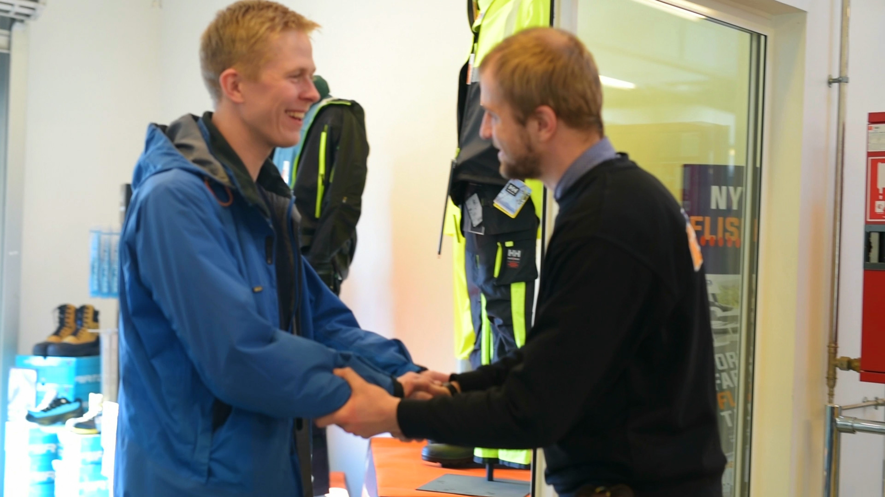
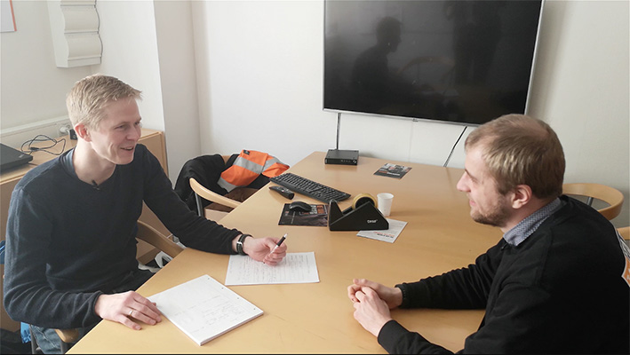
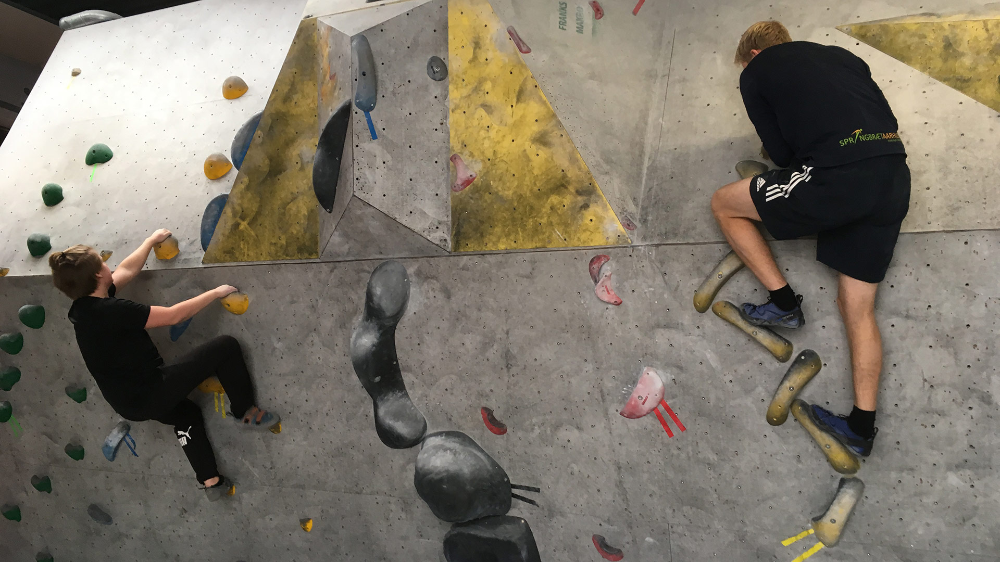
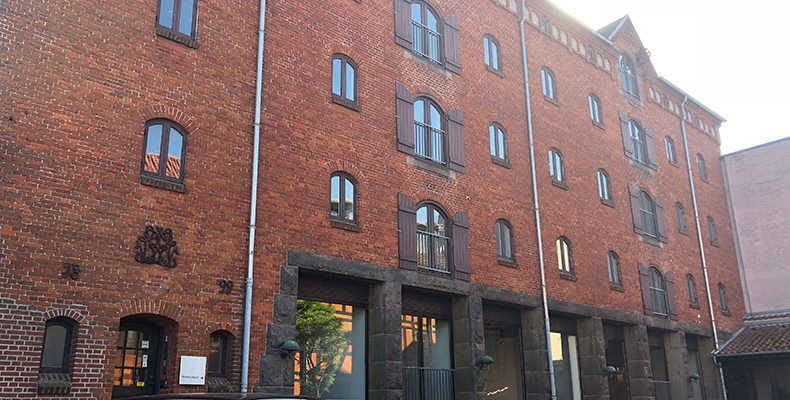
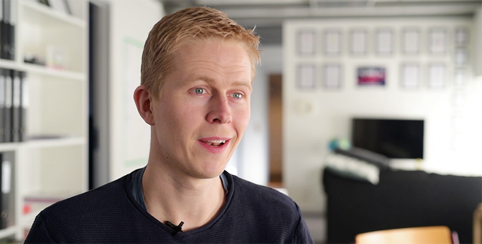

play_circle_filled
play_circle_filled
Jens om AO
Jens i praktik hos STARK


play_circle_filled
En status samtale
Kenneth om Jens


Skolen
Skolens indflydelse på erhvervslivet


play_circle_filled